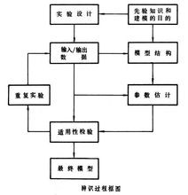

系统辨识是根据系统的输入输出时间函数来确定描述系统行为的数学模型。现代控制理论中的一个分支。通过辨识建立数学模型的目的是估计表征系统行为的重要参数，建立一个能模仿真实系统行为的模型，用当前可测量的系统的输入和输出预测系统输出的未来演变，以及设计控制器。对系统进行分析的主要问题是根据输入时间函数和系统的特性来确定输出信号。
- 中文名
- 系统辨识
- 外文名
- system identification
- 定 义
- 数学模型
- 定 位
- 是现代控制理论中的一个分支
系统辨识简介
编辑system identification
对系统进行控制的主要问题是根据系统的特性设计控制输入，使输出满足预先规定的要求。而系统辨识所研究的问题恰好是这些问题的逆问题。通常，预先给定一个模型类μ={M}（即给定一类已知结构的模型），一类输入信号u和等价准则J=L(y，yM)(一般情况下，J是误差函数，是过程输出y和模型输出yM的一个泛函)；然后选择使误差函数J达到最小的模型，作为辨识所要求的结果。系统辨识包括两个方面：结构辨识和参数估计。在实际的辨识过程中，随着使用的方法不同，结构辨识和参数估计这两个方面并不是截然分开的，而是可以交织在一起进行的。
系统辨识基本步骤
编辑系统辨识先验知识和建模目的的依据
先验知识指关于系统运动规律、数据以及其他方面的已有知识。这些知识对选择模型结构、设计实验和决定辨识方法等都有重要作用。用于不同目的的模型可能会有很大差别。
先验知识是指关于系统运动规律、数据以及其他方面的已有

系统辨识
知识。这些知识对选择模型的结构、设计实验和决定辨识方法等都具有重要的作用。例如可以从基本的物理定律（牛顿定律，基尔霍夫定律，物质守恒定律等）去确定模型结构，建立所研究的变量之间的关系。如果关于这方面的知识是完备的，模型的结构和参数（至少在原则上）便是可以确定的。在空间技术的应用中建立飞行器的动力学模型就是一个例子。但在多数情形下却很难做到这一点。这时先验知识虽然不能完全确定模型，但是在模型结构(也就是辨识中的模型类)的选择上仍然是一个重要因素。此外，对参数变化范围的确定、初值的选取，对数据的必要的限制，以及对模型的适用性进行检验等方面，先验知识也都是最重要的依据。其次，建模的目的对于确定模型的结构和辨识方法也有重要意义。用于不同目的的模型可能会有很大的差别。在估计具有特定物理意义的参数时，主要考虑模型的参数值与真实的参数值是否一致。在建立预测模型时，只需要考虑预测误差。在建立仿真模型时，就要根据应用的要求去决定仿真的深度，也就是决定模型结构的复杂程度。而对于设计控制系统的模型，则出于不同的控制目的可选择不同的模型类。
系统辨识实验设计
辨识的基础是输入和输出数据，而数据来源于对系统的实验和观测，因此辨识归根到底是从数据中提取有关系统的信息的过程，其结果是和实验直接联系在一起的。设计实验的目标之一是要使所得到的数据能包含系统的更多的信息。为此，首先要确定用什么准则来比较数据的好坏。这种准则可以是从辨识的可行性出发的，也可以是从某种最优性原则出发的。实验设计要解决的问题主要是：输入信号的设计，采样区间的设计，预采样滤波器的设计等（见系统辨识实验设计）。
系统辨识结构辨识
即选择模型类中的数学模型M的具体表达形式。除线性系统的结构可通过输入输出数据进行辨识外 ，一般的模型结构主要通过先验知识获得。
系统辨识参数估计
知道模型的结构后，用输入输出数据确定模型中的未知参数。实际测量都是有误差的，所以参数估计以统计方法为主。
系统辨识模型适用性检验
造成模型不适用主要有三方面原因：模型结构选择不当；实验数据误差过大或数据代表性太差；辨识算法存在问题。检验方法主要有利用先验知识检验和利用数据检验两类。
凡是需要通过实验数据确定数学模型和估计参数的场合都要利用辨识技术，辨识技术已经推广到工程和非工程的许多领域，如化学化工过程、核反应堆、电力系统、航空航天飞行器、生物医学系统、社会经济系统、环境系统、生态系统等。适应控制系统则是辨识与控制相结合的一个范例，也是辨识在控制系统中的应用。
系统辨识辨识目的
编辑在提出和解决一个辨识问题时，明确最终使用模型的目的是至关重要的。它对模型类（模型结构）、输入信号和等价准则的选择都有很大的影响。通过辨识建立数学模型通常有四个目的。
①估计具有特定物理意义的参数 有些表征系统行为的重要参数是难以直接测量的，例如在生理、生态、环境、经济等系统中就常有这种情况。这就需要通过能观测到的输入输出数据，用辨识的方法去估计那些参数。
③预测 这是辨识的一个重要应用方面，其目的是用迄今为止系统的可测量的输入和输出去预测系统输出的未来的演变。例如最常见的气象预报，洪水预报，其他如太阳黑子预报，市场价格的预测，河流污染物含量的预测等。预测模型辨识的等价准则主要是使预测误差平方和最小。只要预测误差小就是好的预测模型，对模型的结构及参数则很少再有其他要求。这时辨识的准则和模型应用的目的是一致的，因此可以得到较好的预测模型。
④控制 为了设计控制系统就需要知道描述系统动态特性的数学模型，建立这些模型的目的在于设计控制器。建立什么样的模型合适，取决于设计的方法和准备采用的控制策略。
系统辨识方法
编辑系统辨识经典方法
经典的系统辨识方法的发展已经比较成熟和完善，他包括阶跃响应法、脉冲响应法、频率响应法、相关分析法、谱分析法、最小二乘法和极大似然法等。其中最小二乘法(LS)是一种经典的和最基本的，也是应用最广泛的方法。但是，最小二乘估计是非一致的，是有偏差的，所以为了克服他的缺陷，而形成了一些以最小二乘法为基础的系统辨识方法：广义最小二乘法(GI S)、辅助变量法(IV)、增广最小二乘法(EI，S)和广义最小二乘法(GI S)，以及将一般的最小二乘法与其他方法相结合的方法，有最小二乘两步法(COR—I S)和随机逼近算法等。
经典的系统辨识方法还存在着一定的不足： (1)利用最小二乘法的系统辨识法一般要求输入信号已知，并且必须具有较丰富的变化，然而，这一点在某些动态系统中，系统的输入常常无法保证；(2)极大似然法计算耗费大，可能得到的是损失函数的局部极小值；(3)经典的辨识方法对于某些复杂系统在一些情况下无能为力。
系统辨识现代方法
随着系统的复杂化和对模型精确度要求的提高，系统辨识方法在不断发展，特别是非线性系统辨识方法。主要有：
1、集员系统辨识法
在1979年集员辨识首先出现于Fogel 撰写的文献中，1982年Fogel和Huang又对其做了进一步的改进。集员辨识是假设在噪声或噪声功率未知但有界UBB(Unknown But Bounded)的情况下，利用数据提供的信息给参数或传递函数确定一个总是包含真参数或传递函数的成员集(例如椭球体、多面体、平行六边体等)。不同的实际应用对象，集员成员集的定义也不同。集员辨识理论已广泛应用到多传感器信息融合处理、软测量技术、通讯、信号处理、鲁棒控制及故障检测等方面。
2、多层递阶系统辨识法
多层递阶方法的主要思想为：以时变参数模型的辨识方法作为基础，在输入输出等价的意义下，把一大类非
线性模型化为多层线性模型，为非线性系统的建模给出了一个十分有效的途径。
3、神经网络系统辨识法
由于人工神经网络具有良好的非线性映射能力、自学习适应能力和并行信息处理能力，为解决未知不确定非线性系统的辨识问题提供了一条新的思路。
与传统的基于算法的辨识方法相比较，人工神经网络用于系统辨识具有以下优点：(1)不要求建立实际系统的辨识格式，可以省去对系统建模这一步骤；(2)可以对本质非线性系统进行辨识；(3)辨识的收敛速度仅与神经网络的本身及所采用的学习算法有关；(4)通过调节神经元之间的连接权即可使网络的输出来逼近系统的输出；(5)神经网络也是系统的一个物理实现，可以用在在线控制。
4、模糊逻辑系统辨识法
和有效的方法，在非线性系统辨识领域中有十分广泛的应用。模糊逻辑辨识具有独特的优越性：能够有效地辨识复杂和病态结构的系统；能够有效地辨识具有大时延、时变、多输入单输出的非线性复杂系统；可以辨识性能优越的人类控制器；可以得到被控对象的定性与定量相结合的模型。模糊逻辑建模方法的主要内容可分为两个层次：一是模型结构的辨识，另一个是模型参数的估计。典型的模糊结构辨识方法有：模糊网格法、自适应模糊网格法、模糊聚类法及模糊搜索树法等。
5、小波网络系统辨识法
小波网络是在小波分解的基础上提出的一种前馈神经网络口 ，使用小波网络进行动态系统辨识，成为神经网络辨识的一种新的方法。小波分析在理论上保证了小波网络在非线性函数逼近中所具有的快速性、准确性和全局收敛性等优点。小波理论在系统辨识中，尤其在非线性系统辨识中的应用潜力越来越大，为不确定的复杂的非线性系统辨识提供了一种新的有效途径，其具有良好的应用前景。
系统辨识检验
编辑系统辨识概述
通过参数估计得到的模型，虽然按某种准则在选定的模型类中是最好的，但是并不一定能达到建模的目的，所以还必须进行适用性检验。这是辨识过程的重要一环，只有通过适用性检验的模型才是最终的模型。
造成模型不适用主要有三个方面的原因:模型类(模型的结构)选择不当;实验数据误差过大或由于实验条件限制，数据的代表性太差；辨识算法存在问题（例如没有考虑必要的约束）。
模型是否适用与建模的目的紧密相关，所以很难得出统一的检验方法，而是要根据问题的性质采取不同的方法。一般来说，适用性检验在得到模型后进行，但也可以在辨识过程的各个阶段进行。例如，考察模型的结构可辨识性本身就是一种适用性检验，不可辨识的模型当然是不适用的。
系统辨识检验方法
适用性检验的方法主要有两类：利用先验知识检验和利用数据检验。利用先验知识是适用性检验的一条重要途径。有一些模型从数据的拟合上看不出问题，但是根据对模型已有的知识却可以断定模型是否适用。例如辨识一个化学反应动力学模型：已经知道反应物浓度增大并不抑制反应，如果参数估计的结果反应系数是负的，就可断定这是不合理的。又如辨识生理动力学模型：如果参数估计得到的参数值已超过生理学已知的可能范围，这样的模型也是不适用的。适用性检验的另一条途径是，利用数据在同一模型类中或在不同的模型类中进行比较。在得到模型后常常用一组不同于辨识时用的数据去检验模型的精度。如果检验的结果有过大的误差，则可能存在两个问题：辨识用的数据缺乏代表性或所选的模型类不合适。在不同类的模型中进行比较所用的方法主要是统计检验（如F检验、似然比检验）或者是在拟合误差的基础上加上评价模型的惩罚项（如赤池的AIC准则）。
系统辨识应用
编辑凡是需要通过实验数据确定数学模型和估计参数的场合都要利用辨识技术，辨识技术已经推广到工程和非工程的许多领域，如化学化工过程、核反应堆、电力系统、航空航天飞行器、生物医学系统、社会经济系统、环境系统、生态系统等。适应控制系统则是辨识与控制相结合的一个范例，也是辨识在控制系统中的应用。
系统辨识参考书目
编辑G.C.哥德温、R.L.潘恩著，张永光、袁震东译：《动态系统辨识》,科学出版社,北京，1983。(G.C.Goodwin and R.L.Payne，Dynamic System Identification: Experiment Design and Data Analysis, Academic Press, New York,1977.)
词条标签：